Capítulo 10 Gráficos
10.2 Carregar os Dados
Para este capítulo, serão usados dados da maternidade escola do Hospital Geral de Caxias do Sul, incluídos nos arquivos dadosMater e dadosRNT.
Estes arquivos devem ser baixados para o seu diretório de trabalho.
Crie um objeto mater para receber os dadosMater.xlsx e um com o nome RNT para receber os dadosRNT, a partir do diretório de trabalho, executando os seguinte códigos:
mater <- read_excel ("C:/Users/petro/Dropbox/Git_repositório/Arquivos/dadosMater.xlsx")
RNT <- read_excel ("C:/Users/petro/Dropbox/Git_repositório/Arquivos/dadosRNT.xlsx")10.3 Visão Geral do dadosMater.xlsx
Inicialmente, vamos ter uma visão geral do banco de dados, usando a função glimpse (), do pacote dplyr. Ela nos mostra como os dados estão dispostos e a classe de cada variável. O banco tem 1368 linhas (casos) e 30 colunas (variáveis). Todas as variáveis estão como numéricas (dbl).
glimpse (mater)## Rows: 1,368
## Columns: 30
## $ id <dbl> 1, 2, 3, 4, 5, 6, 7, 8, 9, 10, 11, 12, 13, 14, 15, 16, 17, 1…
## $ idadeMae <dbl> 42, 29, 19, 31, 34, 29, 30, 34, 17, 32, 32, 31, 32, 19, 40, …
## $ altura <dbl> 1.65, 1.66, 1.72, 1.55, 1.60, 1.50, 1.54, 1.63, 1.68, 1.50, …
## $ peso <dbl> 69.9, 78.0, 81.0, 74.0, 60.0, 60.0, 75.5, 61.0, 57.0, 70.0, …
## $ ganhoPeso <dbl> 3.9, 16.5, 5.0, 43.0, 15.0, 11.4, 10.5, 9.0, 15.0, 11.4, 18.…
## $ anosEst <dbl> 3, 11, 9, 5, 7, 8, 4, 6, 10, 1, 4, 4, 18, 8, 2, 7, 3, 7, 11,…
## $ cor <dbl> 2, 1, 2, 2, 2, 2, 1, 1, 1, 2, 1, 1, 1, 2, 1, 1, 1, 1, 1, 2, …
## $ eCivil <dbl> 1, 2, 1, 2, 2, 2, 2, 2, 2, 2, 2, 2, 2, 2, 2, 1, 2, 2, 2, 2, …
## $ renda <dbl> 1.45, 2.41, 1.93, 1.45, 0.48, 0.96, 1.20, 2.41, 2.17, 0.72, …
## $ fumo <dbl> 2, 2, 2, 2, 2, 1, 1, 2, 2, 2, 2, 2, 2, 2, 1, 2, 1, 2, 2, 2, …
## $ quantFumo <dbl> 0, 0, 0, 0, 0, 10, 20, 0, 0, 0, 0, 0, 0, 0, 5, 0, 10, 0, 0, …
## $ prenatal <dbl> 2, 1, 2, 2, 2, 1, 1, 2, 2, 1, 1, 1, 1, 1, 1, 1, 1, 2, 2, 1, …
## $ para <dbl> 5, 0, 0, 1, 2, 1, 2, 1, 0, 4, 1, 4, 0, 1, 6, 0, 3, 0, 1, 1, …
## $ droga <dbl> 2, 2, 2, 2, 2, 2, 2, 2, 2, 2, 2, 2, 2, 2, 1, 2, 2, 2, 2, 2, …
## $ ig <dbl> 29, 33, 33, 33, 33, 33, 33, 33, 34, 34, 35, 35, 35, 35, 36, …
## $ tipoParto <dbl> 2, 2, 1, 1, 2, 1, 2, 1, 1, 2, 2, 2, 2, 2, 1, 2, 2, 2, 2, 1, …
## $ pesoPla <dbl> 224, 1118, 452, 432, 574, 600, 632, 710, 600, 310, 690, 522,…
## $ sexo <dbl> 2, 2, 2, 2, 2, 2, 2, 2, 2, 2, 2, 2, 2, 2, 2, 2, 2, 1, 1, 1, …
## $ pesoRN <dbl> 1035, 2300, 1580, 1840, 2475, 1830, 1800, 2200, 2180, 1685, …
## $ compRN <dbl> 35.5, 45.0, 39.0, 41.0, 47.0, 41.0, 44.0, 44.0, 47.0, 48.0, …
## $ pcRN <dbl> 28, 32, 28, 32, 32, 29, 32, 32, 30, 27, 33, 32, 34, 34, 34, …
## $ apgar1 <dbl> NA, NA, NA, NA, NA, NA, NA, NA, NA, NA, NA, NA, NA, NA, 5, 5…
## $ apgar5 <dbl> NA, NA, NA, NA, NA, NA, NA, NA, NA, NA, NA, NA, NA, NA, 7, 8…
## $ utiNeo <dbl> 1, 2, 1, 1, 1, 1, 2, 2, 1, 1, 2, 1, 1, 2, 2, 2, 2, 1, 2, 2, …
## $ obito <dbl> 2, 2, 2, 2, 2, 2, 2, 2, 2, 2, 2, 2, 2, 2, 2, 2, 2, 2, 2, 2, …
## $ hiv <dbl> 2, 2, 2, 2, 1, 2, 2, 2, 2, 2, 2, 2, 2, 2, 2, 2, 2, 2, 2, 2, …
## $ sifilis <dbl> 2, 2, 2, 2, 1, 2, 2, 2, 2, 2, 2, 2, 2, 2, 1, 2, 2, 2, 2, 2, …
## $ rubeola <dbl> 2, 2, 2, 2, 2, 2, 2, 2, 2, 2, 2, 2, 2, 2, 2, 2, 2, 2, 2, 2, …
## $ toxo <dbl> 2, 2, 2, 2, 2, 2, 2, 2, 2, 2, 2, 2, 2, 2, 2, 2, 1, 2, 2, 2, …
## $ infCong <dbl> 2, 2, 2, 2, 1, 2, 2, 2, 2, 2, 2, 2, 2, 2, 1, 2, 1, 2, 2, 2, …10.3.1 Transformação e criação de variáveis
Vamos começar limitando o banco de dados, selecionando apenas as variáveis que serão usados neste tutorial:
mater1 <- mater %>%
select(idadeMae, anosEst, fumo, para)
glimpse(mater1)## Rows: 1,368
## Columns: 4
## $ idadeMae <dbl> 42, 29, 19, 31, 34, 29, 30, 34, 17, 32, 32, 31, 32, 19, 40, 1…
## $ anosEst <dbl> 3, 11, 9, 5, 7, 8, 4, 6, 10, 1, 4, 4, 18, 8, 2, 7, 3, 7, 11, …
## $ fumo <dbl> 2, 2, 2, 2, 2, 1, 1, 2, 2, 2, 2, 2, 2, 2, 1, 2, 1, 2, 2, 2, 2…
## $ para <dbl> 5, 0, 0, 1, 2, 1, 2, 1, 0, 4, 1, 4, 0, 1, 6, 0, 3, 0, 1, 1, 2…A seguir, vamos transformar a variável fumo como fator e criar duas novas variáveis a partir das variáveis idadeMae e anosEst, que também serão fatores:
mater1$fumo <- factor (mater1$fumo,
levels = c(1, 2),
labels = c("sim", "não"))
mater1$categIdade <- cut (mater$idadeMae,
breaks=c (13,20,36,46),
labels = c ("<20a", "20-35a", ">35a"),
right = FALSE,
ordered_result = TRUE,
include.lowest = TRUE)
mater1$escolaridade <- cut (mater1$anosEst,
breaks= c (0,10,13,18),
right = FALSE,
labels = c("Fundamental",
"Médio",
"Superior"),
include.lowest = TRUE)
glimpse (mater1)## Rows: 1,368
## Columns: 6
## $ idadeMae <dbl> 42, 29, 19, 31, 34, 29, 30, 34, 17, 32, 32, 31, 32, 19, 4…
## $ anosEst <dbl> 3, 11, 9, 5, 7, 8, 4, 6, 10, 1, 4, 4, 18, 8, 2, 7, 3, 7, …
## $ fumo <fct> não, não, não, não, não, sim, sim, não, não, não, não, nã…
## $ para <dbl> 5, 0, 0, 1, 2, 1, 2, 1, 0, 4, 1, 4, 0, 1, 6, 0, 3, 0, 1, …
## $ categIdade <ord> >35a, 20-35a, <20a, 20-35a, 20-35a, 20-35a, 20-35a, 20-35…
## $ escolaridade <fct> Fundamental, Médio, Fundamental, Fundamental, Fundamental…10.4 Gráfico de Setores (Pizza)
Cada segmento (fatia) do gráfico de pizza deve ser proporcional à frequência da categoria que representa. A desvantagem do gráfico de pizza é que ele só pode representar uma variável, portanto, há necessidade de um gráfico separado para cada variável que se deseja representar. Além disso, um gráfico de pizza pode perder clareza se ele é usado para representar mais do que quatro ou cinco categorias.
Os gráficos de pizza são amplamente conhecidos como uma maneira ruim de
visualizar informações.
Com variável mater1$escolaridade e, usando a função table (), criamos uma tabela (tab_escola):
tab_escola <- table(mater1$escolaridade)
tab_escola##
## Fundamental Médio Superior
## 983 358 27Ou
tab_escola <- xtabs(~mater1$escolaridade, data = mater)
tab_escolaUsando as informações da tab_escola, cria-se o vetor escola:
escola <- c(983, 358, 27)Com a função pie (), vamos construir o gráfico de setores:
pie (escola,
labels = c ("Fundamental",
"Médio",
"Superior"),
main = NULL,
col = c ("skyblue",
"cyan",
"lightblue1"))
É possível, também, construir uma pizza em 3 D, usando a função pie3D () do pacote plotrix:
pie3D (escola,
labels = c("Fundamental",
"Médio",
"Superior"),
radius = 0.9,
explode = 0.1,
col = c ("skyblue",
"cyan",
"lightblue1"),
main="Grau de Instrução das Parturientes")
10.4.1 Gráfico de setores com o ggplot2
Inicialmente, cria-se um dataframe, que chamaremos de df_escola, onde grupo são as categorias de escolaridade, n é a frequência de cada categoria e pro é a proporção de cada categoria (frequência de cada categoria dividido pelo total):
df_escola <- data.frame(
grupo = c("Fundamental", "Médio", "Superior"),
n = c (983, 358, 27),
prop = round(c((983/1368)*100, (358/1368)*100, (27/1368)*100),1))
df_escola## grupo n prop
## 1 Fundamental 983 71.9
## 2 Médio 358 26.2
## 3 Superior 27 2.0Vamos agora transformar o dataframe criado, usando as funções arrange (), que colocará as categorias em ordem descentente, e mutate (), que calculará a posição dos rótulos no eixo y. Ambas funções pertecem ao pacote dplyr:
df_escola <- df_escola %>%
arrange(desc(grupo)) %>%
mutate(lab.ypos = cumsum(prop) - 0.5*prop)
df_escola## grupo n prop lab.ypos
## 1 Superior 27 2.0 1.00
## 2 Médio 358 26.2 15.10
## 3 Fundamental 983 71.9 64.15Para criar gráfico de pizza com o ggplot2, usaremos como função chave o geom_bar () + coord_polar (). Adicionremos texto com a função geom_text () e as cores de preenchimento com scale_color_manual (). Será aplicado por último theme_void () para remover eixos, fundos, etc.
As cores escolhidas são colocas em objeto minhas_cores:
minhas_cores <- c("steelblue", "salmon", "yellow")Gráfico
ggplot(df_escola, aes(x = "", y = prop, fill = grupo)) +
geom_bar(width = 1, stat = "identity", color = "white") +
coord_polar("y", start = 0)+
geom_text(aes(y = lab.ypos, label = prop), color = "black", size = 5)+
scale_fill_manual(values = minhas_cores) +
theme_void()
Voltaremos ao ggplot2 mais adiante.
10.4.2 Uma variação do gráfico de pizza: gráfico de rosca (Donut chart)
ggplot(df_escola, aes(x = 2, y = prop, fill = grupo)) +
geom_bar(stat = "identity", color = "white") +
coord_polar(theta = "y", start = 0)+
geom_text(aes(y = lab.ypos, label = prop), color = "black", size = 5)+
scale_fill_manual(values = minhas_cores) +
theme_void()+
xlim(0.5, 2.5)10.5 Gráficos de Barras
10.5.1 Gráfico de Barras Simples
Começamos construindo uma tabela usando a variável mater1$categIdade:
tab_idade <- table(mater1$categIdade)Após, usando a função barplot (), construímos o gráfico de barras:
barplot(tab_idade)
A seguir, usando outros argumentos próprios da função, melhoramos o aspecto do gráfico. O argumento ylim = vai corrigir o limite do eixo y que ficou em 800 e deveria ser 1000; col = tornará as barras de cor azul metálico (steelblue); ylab = e xlab = colocam rótulos nos eixos; las = 1 faz o texto do eixo y ficar horizontal e cex.lab = 1.2 aumenta o texto dos rótulos em 20%. A função box (bty = "L") (opcional) faz os eixos se encontraren em 0.
barplot(tab_idade,
ylim = c (0,1000),
col= "steelblue",
border = "black",
ylab = "Frequência absoluta",
xlab = "Faixa etária",
cex.lab = 1.2,
las = 1)
box(bty = "L")Além disso, é possível fazer outras alterações para tornar o gráfico mais informativo, como as frequência de cada barra colocada no topo das mesmas:
1º Passo: Criar um gráfico de barras , colocando-o em um objeto
x, que conterá a coordenada X do centro de cada uma das barras. Para verificar isso basta executar o objetox:2º Passo: colocar a tabela tab_idade com um objeto
yda classe matriz:3º Passo: usar a funçãoo
text ()para colocar os valores:
x <- barplot(tab_idade,
ylim = c (0,1000),
col= "springgreen",
border = "black",
ylab = "Frequência absoluta",
xlab = "Faixa etária",
cex.lab = 1.2,
las = 1)
box(bty = "L")
y <- as.matrix(tab_idade)
text (x, y, labels = as.character(y), adj = c(0.5, 2), col = "black")
O gráfico de barras simples pode ser construído com as barras horizontais. Basta usar o argumento horiz = TRUE e adaptando os eixoa x e y, para essa situação:
barplot(tab_idade,
xlim = c (0,1000),
col= "salmon",
border = "black",
ylab= "",
xlab = "Frequência absoluta",
cex.lab = 1.3,
horiz=TRUE,
las = 1)
box(bty = "L")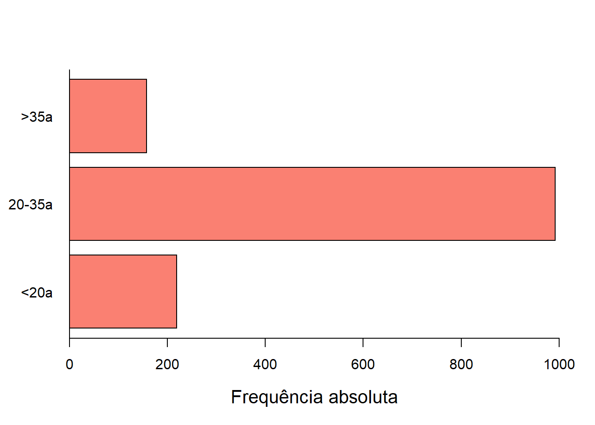
10.5.2 Gráfico de Barras Empilhadas
Para este tipo de apresentação usamos, praticamente, os mesmos argumentos vistos para gerar um gráfico de barra simples. Como existem duas variáveis, há necessidade de avisar ao R como elas devem aparecer. Para isso, foi usado o argumento beside = FALSE, que informa que as barras não estarão uma ao lado da outra e sim empilhadas. O padrão é as barras ficarem uma ao lado da outra. Acresscenta-se uma legenda com a função legend() na parte superior esquerda (topleft). O argumento bty = "n" informa que não queremos um quadro ao redor da legenda e fill = c ("dimgrey", "salmon") são as cores das barras.
tab_fumo <- table (mater1$fumo, mater1$categIdade)
tab_fumo##
## <20a 20-35a >35a
## sim 35 235 31
## não 184 757 126barplot (tab_fumo,
beside=FALSE,
ylim = c (0,1000),
xlab="Faixa Etária das gestantes",
ylab = "Frequência",
col = c ("dimgrey", "salmon"),
cex.lab = 1.2,
cex.axis = 1.2,
cex.names = 1.2)
box(bty = "L")
legend (legend=c ("Fumantes", "Não Fumantes"),
fill = c ("dimgrey", "salmon"),
bty="n",
cex = 1,
"topleft")
10.5.3 Gráfico de Barras Lado a Lado
É igual a anterior, apenas com o argumento beside = TRUE.
barplot (tab_fumo,
beside=TRUE,
ylim = c (0,800),
xlab="Faixa Etária das gestantes",
ylab = "Frequência",
col = c ("dimgrey", "salmon"),
cex.lab = 1.2,
cex.axis = 1.2,
cex.names = 1.2)
box(bty = "L")
legend (legend=c ("Fumantes", "Não Fumantes"),
fill = c ("dimgrey", "salmon"),
bty="n",
cex = 1,
"topleft")
10.5.4 Gráfico de Barras com Variáveis Discretas
A variável para é uma variável numérica discreta e, para representá-la o mais adequado é usar um gráfico de barras simples.
tab_filhos<- table (mater1$para)
barplot (tab_filhos,
col = "salmon",
xlab="Número de filhos anteriores ao atual",
ylab = "Frequência",
ylim = c(0, 500),
cex.lab = 1.2,
cex.axis = 1.2,
cex.names = 1.2)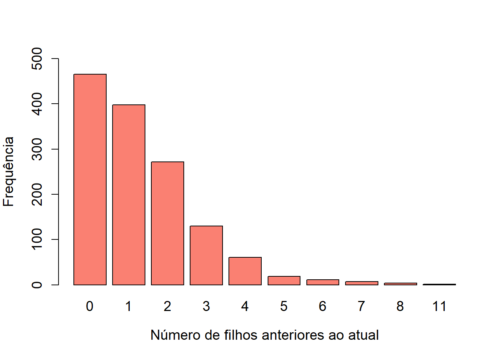
10.5.5 Gráfico de Barras Simples com o ggplot2
Ele segue as seguintes etapas:
- Crie os dados como um data.frame
table(mater1$categIdade)##
## <20a 20-35a >35a
## 219 992 157df_idade <- data.frame (
categ = c ("<20a", "20-35a", ">35a"),
freq = c (219, 992, 157))
df_idade## categ freq
## 1 <20a 219
## 2 20-35a 992
## 3 >35a 157Para a construção do gráfico:
- Comece chamando a função
ggplot (); - Em seguida, especifique o objeto de dados,
df_idade. Tem que ser um dataframe. Necessita uma variável numérica(freq) e outra categórica (categ); - Então vem a estética, definida na função
aes (): defina a variável categórica para o eixo X, use a numérica para o eixo Y - Finalmente, chame
geom_bar (). Você deve especificarstat = "identity"para este tipo de conjunto de dados e a largura das barraswidth = 0.7. - Para controlar outros aspectos:
- Cores:
color =é para a borda da barra efill =é a cor do preenchimento. Para estabelecer a cor de cada barra manualmnete, usescale_fill_manual(); - Para remover a legenda, use
theme(legend.position = "none") - Pa um aspecto clássico, use
theme_classic (); - Para colocar as frequências no topo das barras, use
geom_text (); - para que as barras fiquem horizontais, usar
coord_flip (), fazendo ajustes para o texto das frequências e para os rótulos dos eixos.
- Cores:
df_idade %>%
mutate(categ = factor(categ, levels=c("<20a", "20-35a", ">35a"))) %>%
ggplot(aes(x = categ, y=freq, fill = categ)) +
geom_bar(stat = "identity", width = 0.7) +
ylab("Frequência") +
xlab("Idade da Parturiente") +
scale_fill_manual(values = c("lightsalmon1", "salmon", "lightsalmon4")) +
theme_classic() +
theme(legend.position="none") +
geom_text(aes(label=paste0(freq)), vjust=1.5, colour="white")
10.6 Gráfico de Barra de Erro
10.6.1 Exploração e Manipulação Arquivo RNT.xlsx
O arquivo RNT.xlsx tem a seguinte estruturs:
glimpse (RNT)## Rows: 1,085
## Columns: 30
## $ id <dbl> 1, 2, 3, 4, 5, 6, 7, 8, 9, 10, 11, 12, 13, 14, 15, 16, 17, 1…
## $ idadeMae <dbl> 28, 31, 27, 28, 18, 28, 22, 28, 25, 14, 29, 26, 31, 22, 28, …
## $ altura <dbl> 1.50, 1.55, 1.60, 1.58, 1.76, 1.63, 1.54, 1.55, 1.56, 1.51, …
## $ peso <dbl> 48.5, 65.0, 60.0, 47.0, 65.5, 72.0, 65.0, 74.0, 70.0, 56.7, …
## $ ganhoPeso <dbl> 11.0, 24.0, 15.0, 9.0, 6.5, 13.0, 8.5, 10.0, 11.4, 8.3, 8.0,…
## $ anosest <dbl> 6, 5, 8, 8, 7, 11, 6, 5, 9, 6, 11, 11, 8, 6, 8, 8, 11, 6, 5,…
## $ cor <dbl> 2, 1, 2, 1, 1, 1, 1, 1, 2, 2, 1, 2, 1, 2, 1, 1, 2, 2, 1, 1, …
## $ ecivil <dbl> 2, 2, 2, 2, 1, 1, 2, 2, 1, 2, 2, 2, 1, 2, 2, 2, 2, 1, 1, 2, …
## $ renda <dbl> 3.133, 0.723, 2.410, 1.687, 1.928, 1.920, 2.651, 2.530, 0.48…
## $ fumo <dbl> 2, 2, 1, 2, 1, 1, 2, 2, 2, 2, 2, 2, 2, 2, 2, 2, 2, 2, 2, 2, …
## $ quantFumo <dbl> 0, 0, 20, 0, 20, 20, 0, 0, 0, 0, 0, 0, 0, 0, 0, 0, 0, 0, 0, …
## $ prenatal <dbl> 1, 2, 1, 2, 2, 1, 1, 2, 1, 2, 1, 1, 1, 1, 2, 1, 2, 2, 1, 1, …
## $ para <dbl> 1, 2, 2, 1, 1, 0, 2, 3, 5, 0, 0, 0, 1, 1, 2, 1, 1, 1, 2, 1, …
## $ droga <dbl> 2, 2, 2, 2, 2, 2, 2, 2, 2, 2, 2, 2, 2, 2, 2, 2, 2, 2, 2, 2, …
## $ ig <dbl> 37, 37, 37, 38, 39, 39, 39, 39, 39, 39, 39, 39, 40, 40, 40, …
## $ tipoParto <dbl> 1, 2, 2, 1, 1, 2, 2, 1, 1, 1, 2, 2, 1, 1, 2, 2, 2, 2, 2, 1, …
## $ pesoPla <dbl> 550, 530, 530, 780, 752, 247, 530, 550, 462, 600, 684, 566, …
## $ sexo <dbl> 1, 1, 1, 1, 1, 1, 1, 1, 1, 1, 1, 1, 1, 1, 1, 1, 1, 1, 1, 1, …
## $ pesoRN <dbl> 3285, 3100, 3100, 2800, 3270, 1440, 3365, 3650, 2605, 3200, …
## $ compRN <dbl> 48.5, 47.0, 47.0, 48.0, 49.0, 41.5, 50.0, 48.0, 46.0, 50.0, …
## $ pcRN <dbl> 33, 34, 34, 34, 35, 30, 35, 36, 34, 34, 34, 33, 34, 33, 34, …
## $ apgar1 <dbl> 8, 9, 8, 9, 4, 3, 8, 9, 9, 9, 9, 6, 9, 8, 6, 8, 8, 6, 8, 8, …
## $ apgar5 <dbl> 9, 9, 9, 10, 9, 6, 9, 9, 9, 10, 10, 9, 9, 9, 9, 9, 9, 9, 9, …
## $ utiNeo <dbl> 2, 2, 1, 2, 2, 1, 2, 2, 2, 2, 2, 2, 2, 2, 2, 2, 2, 1, 2, 2, …
## $ obito <dbl> 2, 2, 2, 2, 2, 2, 2, 2, 2, 2, 2, 2, 2, 2, 2, 2, 2, 2, 2, 2, …
## $ hiv <dbl> 2, 2, 2, 2, 2, 2, 2, 2, 2, 2, 2, 1, 2, 2, 2, 2, 2, 2, 2, 2, …
## $ sifilis <dbl> 2, 2, 2, 2, 2, 2, 2, 2, 2, 2, 2, 2, 2, 2, 2, 2, 2, 2, 2, 2, …
## $ rubeola <dbl> 2, 2, 2, 2, 2, 2, 2, 2, 2, 2, 2, 2, 2, 2, 2, 2, 2, 2, 2, 2, …
## $ toxo <dbl> 2, 2, 2, 2, 2, 2, 2, 2, 2, 2, 2, 2, 2, 2, 2, 2, 2, 2, 2, 2, …
## $ infCong <dbl> 2, 2, 2, 2, 2, 2, 2, 2, 2, 2, 2, 1, 2, 2, 2, 2, 2, 2, 2, 2, …Vamos selecionar apenas as variáveis pesoRN e sexo que serão recebidas por um objeto de nome dados:
dados <- RNT %>% select(pesoRN, compRN, sexo)
glimpse (dados)## Rows: 1,085
## Columns: 3
## $ pesoRN <dbl> 3285, 3100, 3100, 2800, 3270, 1440, 3365, 3650, 2605, 3200, 340…
## $ compRN <dbl> 48.5, 47.0, 47.0, 48.0, 49.0, 41.5, 50.0, 48.0, 46.0, 50.0, 49.…
## $ sexo <dbl> 1, 1, 1, 1, 1, 1, 1, 1, 1, 1, 1, 1, 1, 1, 1, 1, 1, 1, 1, 1, 1, …Observamos que a variável sexo está como numérica e deve ser transformada para fator:
dados$sexo <- factor (dados$sexo,
levels = c(1, 2),
label = c("masc", "fem"))
glimpse (dados)## Rows: 1,085
## Columns: 3
## $ pesoRN <dbl> 3285, 3100, 3100, 2800, 3270, 1440, 3365, 3650, 2605, 3200, 340…
## $ compRN <dbl> 48.5, 47.0, 47.0, 48.0, 49.0, 41.5, 50.0, 48.0, 46.0, 50.0, 49.…
## $ sexo <fct> masc, masc, masc, masc, masc, masc, masc, masc, masc, masc, mas…Agora, temos um conjunto de dados com uma variável numérica (pesoRN) e uma variável categórica (sexo), como fator.
10.6.1.1 Resumos Numericos
Vamos conhecer o resumo numérico da variável pesoRN, usando as funções group_by () e summarise () do pacote dplyr:
resumo <- dados %>%
group_by(sexo) %>%
summarise(n = n (),
media = mean(pesoRN),
dp = sd (pesoRN),
mediana = median (pesoRN),
IIQ = IQR (pesoRN)) %>%
mutate(ep = dp/sqrt(n)) %>%
mutate(me = ep * qt(1 - (0.05/2), n - 1))
resumo## # A tibble: 2 × 8
## sexo n media dp mediana IIQ ep me
## <fct> <int> <dbl> <dbl> <dbl> <dbl> <dbl> <dbl>
## 1 masc 592 3274. 458. 3270 551. 18.8 37.0
## 2 fem 493 3147. 458. 3165 615 20.6 40.5Este resumo fornece o n, a média, o desvio padrão, a mediana, o intervalo interquartil, o erro padrão e a margem de erro.
10.6.2 Criação do Gráfico de Barra de Erro
Vamos seguir as seguintes etapas:
1ª Etapa:
- Criação de um vetor que recebe o nome
barrascom as médias dos subgrupos; - Este vetor será usado na construção do gráfico de barras;
- Incluir este em outro objeto, denominado de
bp, que receberá o gráfico de barras.
2ª Etapa:
- Calcular a margem de erro (\(me = 1.96 × dp\)) em cada um dos grupos;
- Com as margens de erro construir os limites do intervalo de confiança (\({média} \pm {me}\)).
3ª Etapa:
- Adcionar ao gráfico de barras os limites calculados, usando a função
errbar ()do pacoteHmisc.
barras <- c (mu_m, mu_f)
bp <- barplot(barras,
ylim=c(0,4500),
ylab = "Peso do Recém-nascido (g)",
cex.lab = 1.3,
cex.axis = 1.3,
cex.names = 1.3,
space = c(0,0.5),
names.arg=c("Meninos", "Meninas"),
col = c("lightblue", " pink2"))
box(bty = "L")
me_m <- 1.96 * dp_m
me_f <- 1.96 * dp_f
lim_inf <- c(mu_m - me_m, mu_f - me_f)
round (lim_inf, 2)## [1] 2376.18 2249.69lim_sup <- c(mu_m + me_m, mu_f + me_f)
round (lim_sup, 2) ## [1] 4172.08 4044.09errbar(bp, barras, lim_sup, lim_inf, add=TRUE, xlab=NULL)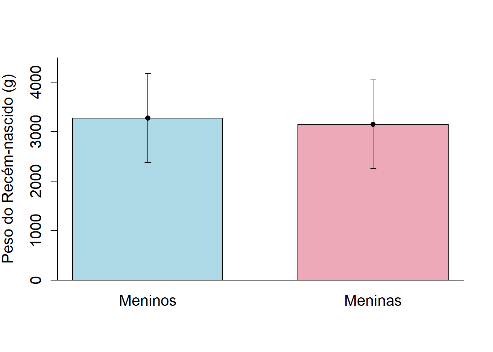
OBS.: Foram usados os desvios padrão na construção da margem de erro, mas o IC95% usa o erro padrão. Entretanto, como este é muito menor que o dp, optou-se pelo dp, por uma questão didática.
10.7 Gráfico de Barra de Erro com o ggplot2
Vamos usar os mesmos dados anteriores e o resumo numérico do resumo.
10.7.1 Construção do gráfico
Primeiro se constroi uma camada criando um gráfico de barra com a função geom_bar (). Após, usando a função geom_errorbar (), cria-se as barras de erro e a função geom_point () coloca um ponto no valor das médias. Os demais comandos são os rótulos e tamanho dos textos, bem como o tema usado (theme_classic()):
p<- ggplot(resumo, aes(x=sexo, y=media, fill=sexo)) +
geom_bar(stat="identity", width = 0.4, color="black") +
geom_point() +
geom_errorbar(aes(ymin=media-dp, ymax=media+dp), width=0.1,
position=position_identity()) +
scale_fill_manual(values=c("lightskyblue1","pink2"))+
theme(legend.position="none")
print(p)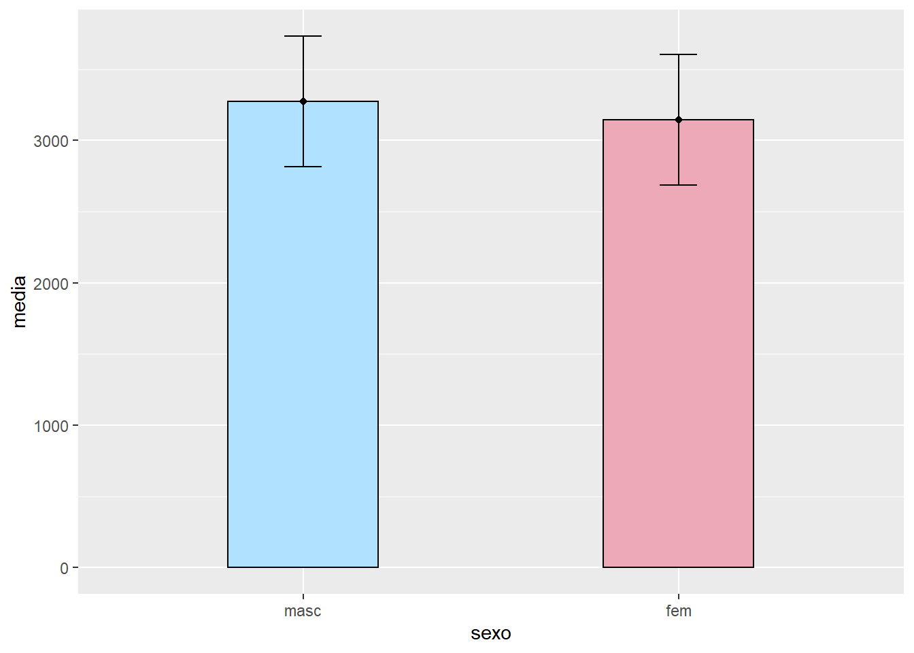
# Final
p+labs(title="Peso do RN por Sexo", x="", y = "Peso do Recém-nascido (g)")+
theme_classic() +
theme(legend.position="none")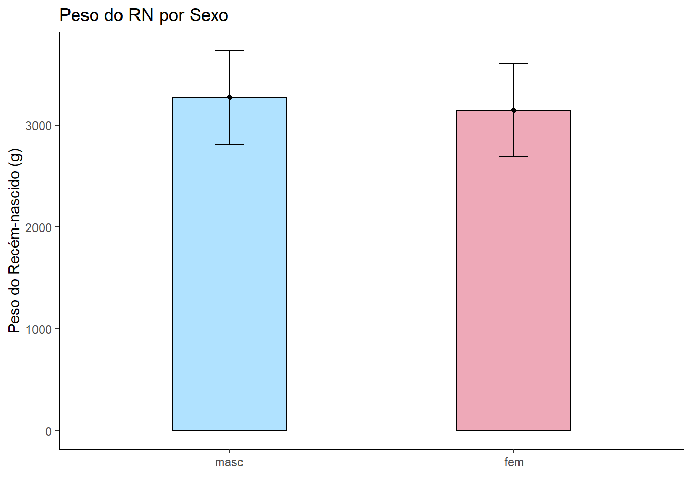
10.7.2 Gráfico com apenas as barras superiores
ggplot(resumo, aes(x=sexo, y=media, fill=sexo)) +
geom_bar(stat="identity", width = 0.4, color="black") +
geom_point() +
geom_errorbar(aes(ymin=media, ymax=media+dp), width=0.1,
position=position_dodge(.9)) +
labs(title="Peso do RN por Sexo", x="", y = "Peso do Recém-nascido (g)")+
theme_classic() +
theme(legend.position="none") +
scale_fill_manual(values=c("lightskyblue1","pink2"))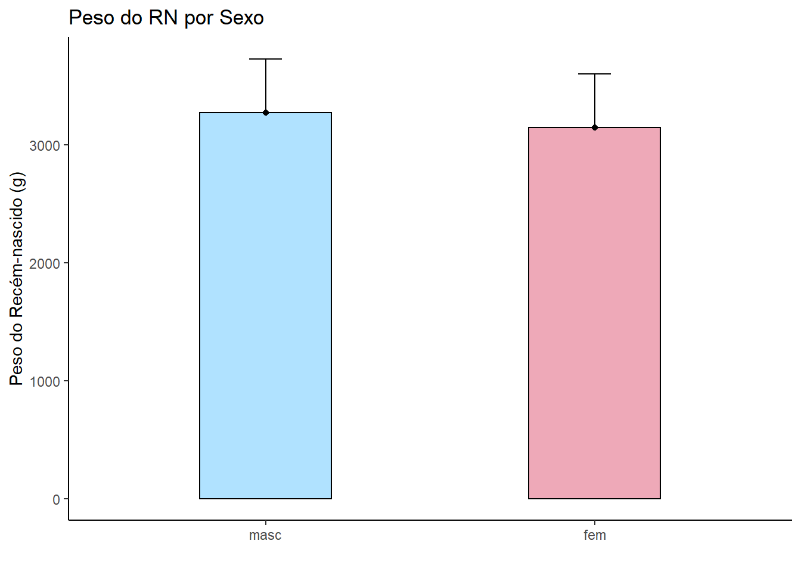
10.8 Gráfico de Barra de Erro com a Função lineplot.CI ()
Uma função simples para realizar um gráfico com barra de erro é a lineplot.CI () do pacote sciplot.
Vamos criar o mesmo gráfico anterior, peso médio do recém-nascido por sexo, usando o erro padrão. O padrão é retornar \({média} \pm {ep}\). Entretanto, isto pode ser modificado com o argumento ci.fun= que usa a margem de erro, ou seja, \(me = 1.96 × ep\).
lineplot.CI (dados$sexo,
dados$pesoRN,
type = "p",
xlab="",
ylab="Peso do RN (g)",
lty = 2,
las = 1,
lwd = 3,
err.col = c("lightskyblue","pink3"),
ci.fun= function(x) c(mean(x)-se(x)*qnorm(0.975),
mean(x)+se(x)*qnorm(0.975)))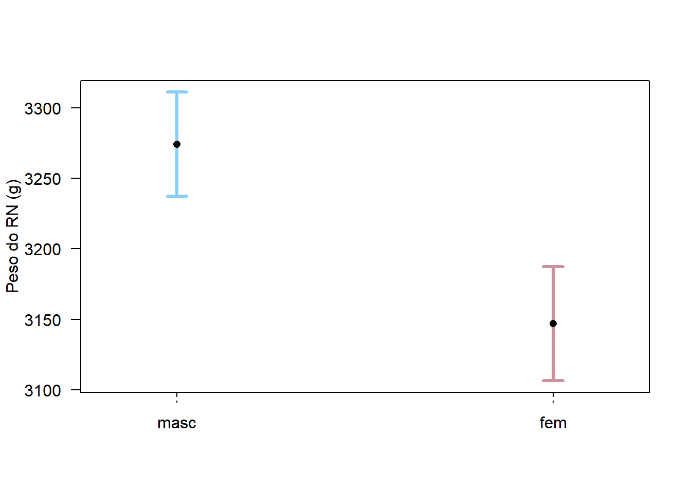
O argumento type = "p" determina um gráfico com pontos, mas sem linha de união. Se for substituído por type = "l", aparecem apenas as linhas de união e type = "b", aparecem ambos.
10.9 Histograma
O histograma é uma ferramenta gráfica que fornece informações sobre o formato da distribuição e dispersão dos dados, permitindo verificar se existe ou não simetria. É usado para dados contínuos.
No histograma as frequências observadas são representadas por intervalos de classes de ocorrência que estão no eixo x e a altura das barras, representando a frequência de cada intervalo, no eixo y. A área de cada barra é proporcional à porcentagem de observações de cada intervalo.
O R base possui uma função, denominada de hist () que constroi o histograma e possui vários argumentos:
| Argumento | Significado |
|---|---|
| x | um vetor numérico usado na construção do histograma; |
| breaks | especifica a quantidade de barras; |
| freq | lógico; se TRUE, o gráfico do histograma é uma representação de frequências, o componente de contagens do resultado; se FALSE, densidades de probabilidade, densidade de componentes, são plotados. O padrão é TRUE; |
| col | cor a ser usada para preencher as barras. O padrão de NULL produz barras não preenchidas; |
| border | cor da borda ao redor das barras. O padrão é usar a cor de primeiro plano padrão; |
| main, xlab, ylab | rótulo do título, do eixo x e do eixo y; |
| xlim, ylim | limites do eixo x e do eixo y. |
| … | |
10.9.1 Histograma Simples
Fazer um sumário dos dados para se ter uma ideia de como eles se comportam. Para isso, usar a função summary () que nos entrega os valores mínimo, máximo, média, mediana e os percentis 25 e 75:
summary(dados$pesoRN)## Min. 1st Qu. Median Mean 3rd Qu. Max.
## 1425 2920 3215 3216 3505 4950Vamos construir um histograma com a função hist ():
hist(dados$pesoRN)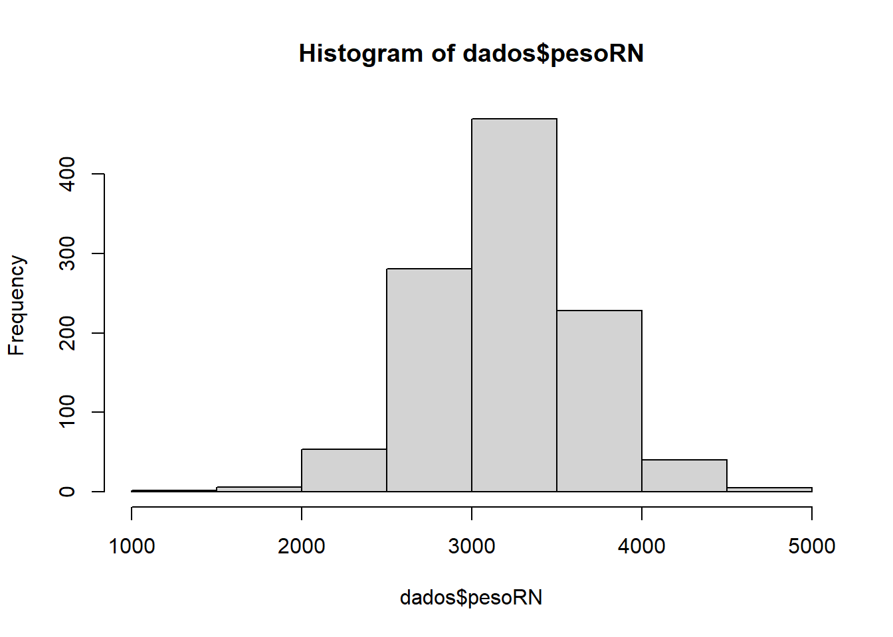
Observando o histograma gerado, verifica-se alguns incovenientes que podem ser melhorados para tornar a sua aparência mais agradável.
- Os eixos apresentam textos com o nome da variável no eixo x e em língua inglesa no eixo y;
- O eixo y tem um limite superior menor do que a barra mais alta;
- O gráfico é entregue na cor cinza, que conforme o interesse pode ser modificada;
- O número de barras pode ser modificado com o argumento
breaks. Existe uma função no R que permite calcular o número de intervalos, usando a regra de Sturges. Entretanto, na maioria das vezes, é o objetivo do estudo quem determina o número de barras e nem sempre o R obedece ao argumentobreaks =.
nclass.Sturges(dados$pesoRN)## [1] 12A função nclass.Sturges() fornece um resultado igual a 12.
hist(dados$pesoRN,
breaks = 12,
ylim = c (0, 500),
xlim = c (1000, 5000),
main= NULL,
ylab = "Frequência",
xlab = "Peso do Recém-nascido (g)",
col = "steelblue",
las = 1)
box(bty = "L")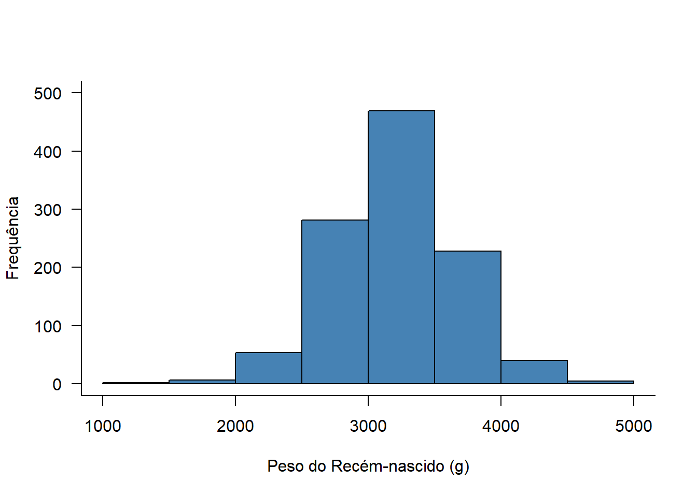
Observa-se que o histograma fica igual ao anterior, mudando a cor das barras, o limite do eixo y e os rótulos dos eixos. O R não modificou o número de barras. Modifique o número de barras e veja o que acontece!
10.9.2 Histograma com curva normal sobreposta
Eventualmente, para melhor comparar a distribuição dos dados, usamos uma curva normal sobreposta que servirá de indicador.
1º Passo:
Construir um histograma de densidade, que é a proporção de todas as observações que se enquadram dentro do intervalo. Na função hist (), modificar o argumento para freq = TRUE.
2º Passo:
Adicionar uma curva normal ao histograma, usando a função curve (). Calcular antes a média e o desvio padrão da variável dados$pesoRN.
Como os valores da densidade no eixo y estão como notação científica (\(4e-04 = 4.10^{-4}\)) , usamos a função options(scipen = 999) para remover e para retornar ao padrão, no final, usar options (scipen = 0, digits = 7):
mu <- mean(dados$pesoRN)
dp <- sd(dados$pesoRN)
options (scipen = 999)
hist(dados$pesoRN,
xlim = c(1000, 5000),
ylim = c(0, 0.001),
main= NULL,
ylab = "Densidade",
xlab = "Peso do Recém-nascido (g)",
col ="steelblue",
freq = FALSE,
border = "white")
box (bty = "L")
curve (dnorm (x,
mean=mu,
sd=dp),
col="red",
lty=1,
lwd=2,
add=TRUE)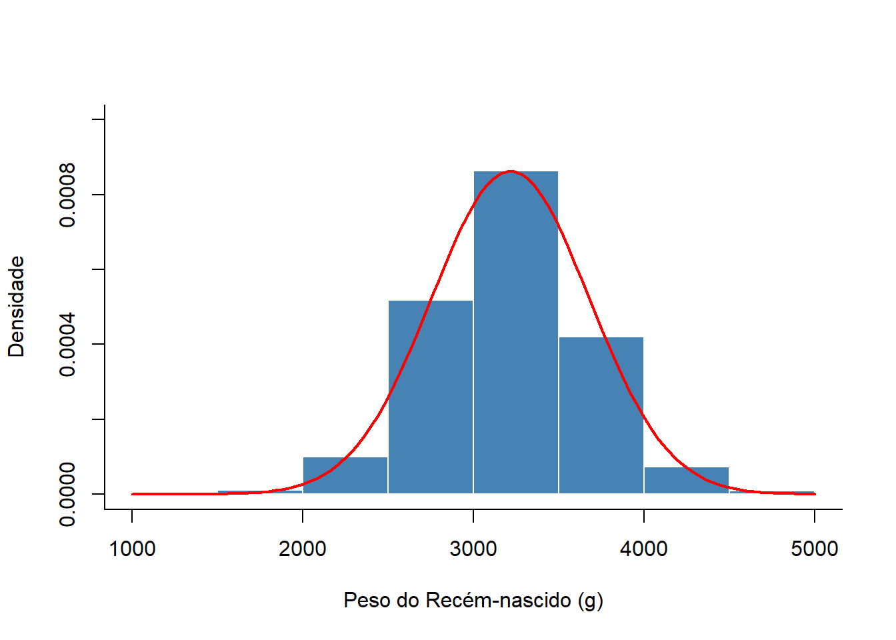
10.9.3 Componentes do Histograma
Ao se criar um objeto da classe histogram, podemos verificar uma lista de componentes do mesmo, colocando o mesmo em um objeto, no exemplo, h.
h <- hist(dados$pesoRN,
breaks = 8,
xlim = c(1000, 5000),
ylim = c(0, 500),
main= NULL,
ylab = "Frequência",
xlab = "Peso do Recém-nascido (g)",
col ="seagreen2",
freq = TRUE,
border = "white")
box (bty = "L")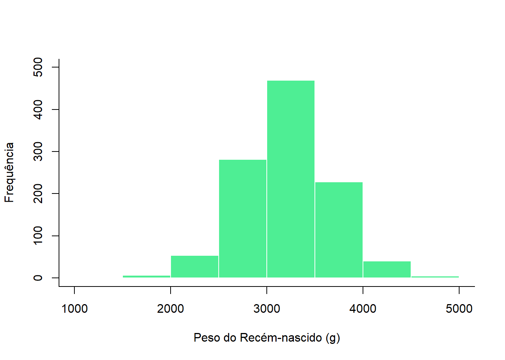
h## $breaks
## [1] 1000 1500 2000 2500 3000 3500 4000 4500 5000
##
## $counts
## [1] 2 6 54 281 469 228 40 5
##
## $density
## [1] 0.000003686636 0.000011059908 0.000099539171 0.000517972350 0.000864516129
## [6] 0.000420276498 0.000073732719 0.000009216590
##
## $mids
## [1] 1250 1750 2250 2750 3250 3750 4250 4750
##
## $xname
## [1] "dados$pesoRN"
##
## $equidist
## [1] TRUE
##
## attr(,"class")
## [1] "histogram"Estes componentes podem ser usados para outras análises.
10.9.3.1 Construção de um histograma usando os componentes
Pode-se colocar os valores correspondentes às barras usando os componentes do histograma.
hist(dados$pesoRN,
breaks = 8,
ylim = c(0, 500),
xlim = c(1000, 5000),
main= NULL,
ylab = "Frequência",
xlab = "Peso do Recém-nascido (g)",
col = "salmon")
box (bty = "L")
text (h$mids, h$counts, labels = h$counts, adj= c(0.5, -0.5))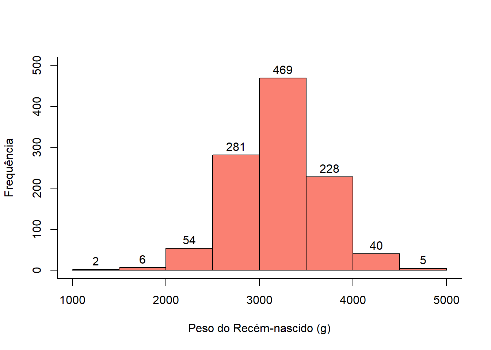
10.9.4 Histograma usando o ggplot2
A função geom_histogram () do pacote ggplot2 é usada para a construção do histograma.
dados %>%
ggplot(aes(x=pesoRN))+
geom_histogram(color = "black",
fill = "lightblue",
breaks = seq(1000, 5000, 250)) +
theme_classic() +
ylab("Frequência") +
xlab("Peso do Recém-nascido (g)")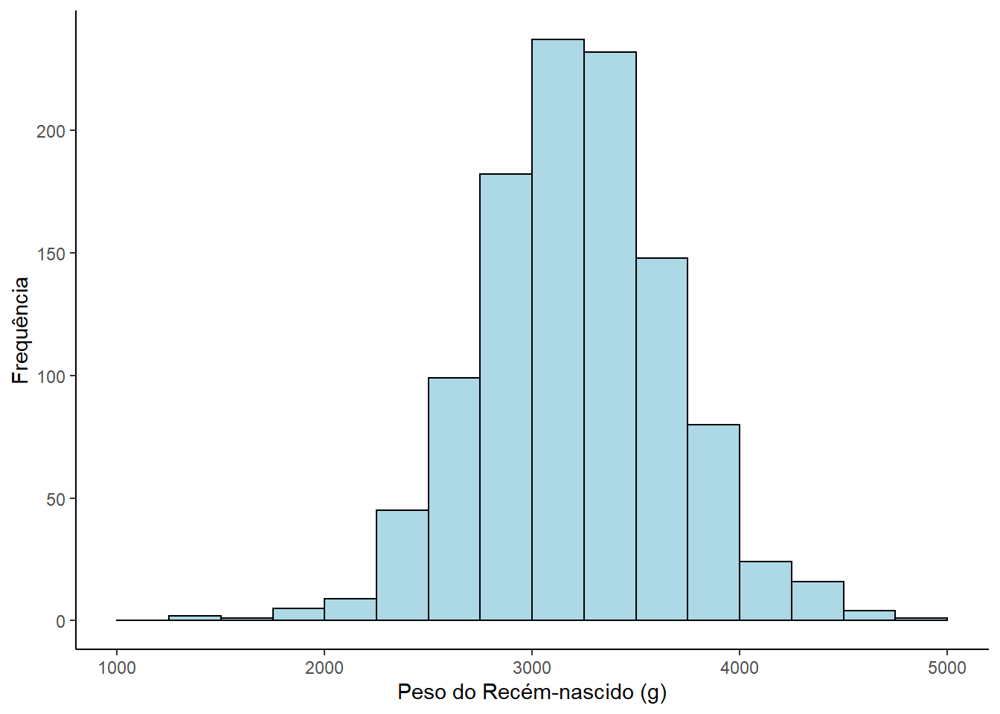
Podemos acrescentar uma linha na média com a função geom_vline ():
dados %>%
ggplot(aes(x=pesoRN))+
geom_histogram(color = "black",
fill = "peachpuff",
breaks = seq(1000, 5000, 250)) +
theme_classic() +
ylab("Frequência") +
xlab("Peso do Recém-nascido (g)") +
geom_vline(aes (xintercept = mean(pesoRN)),
color = "red",
linetype = "dashed",
size = 1)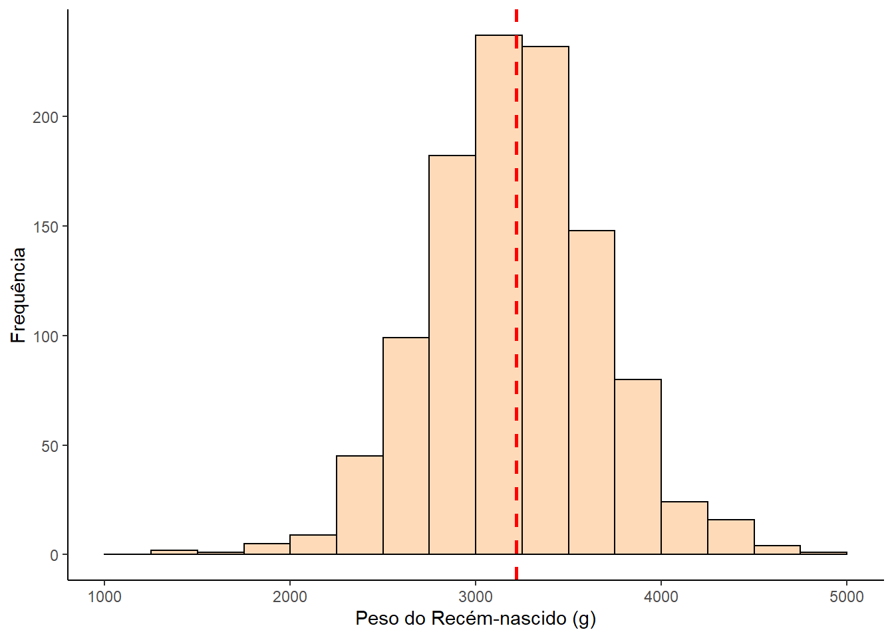
10.9.5 Histograma por grupos
Usando o peso dos recém-nascidos(pesoRN) e o sexo do banco de dados RNT, vamos calcular a média e o desvio padrão por sexo, usando o pacote dplyr:
medias <- dados %>%
group_by(sexo) %>%
summarise(media = mean(pesoRN),
DP = sd (pesoRN))
medias ## # A tibble: 2 × 3
## sexo media DP
## <fct> <dbl> <dbl>
## 1 masc 3274. 458.
## 2 fem 3147. 458.Construção dos histogramas sobrepostos com suas respectivas médias:
ggplot(dados, aes(x=pesoRN, fill=sexo)) +
geom_histogram(position = "identity", bins = 20) +
scale_fill_manual(values=c("lightskyblue1", "pink2")) +
theme_classic() +
geom_vline(data=medias, aes(xintercept=media, color=sexo),
linetype="dashed") +
xlab("Peso do Recém-nascido (g)") +
ylab ("Frequência")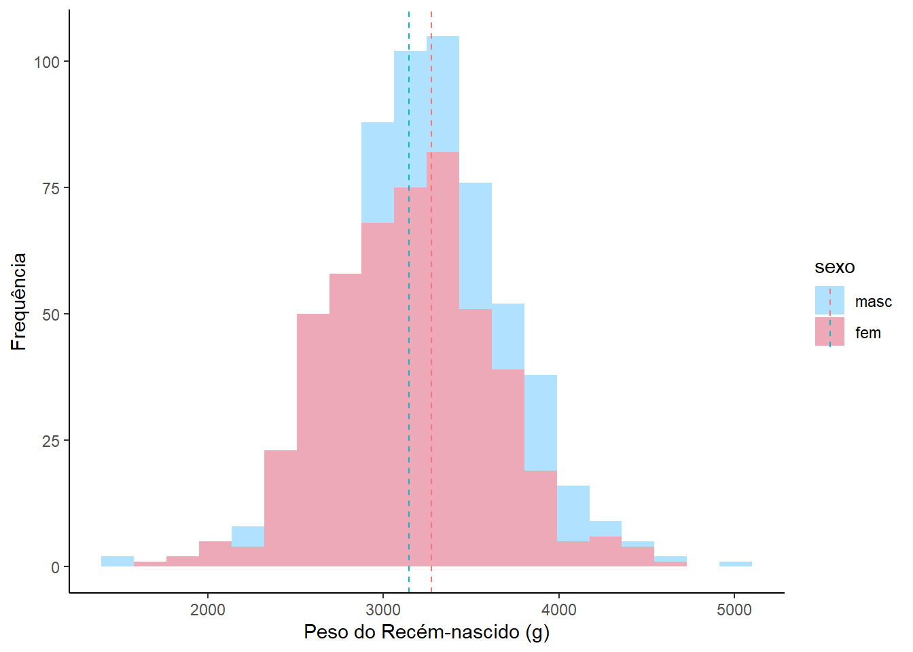
10.10 Gráficos de Densidade
plot (density(dados$pesoRN),
frame = FALSE,
ylim = c(0, 0.001),
main = "",
ylab = "Densidade",
xlab = "Peso do recém-nascido (g)")
polygon (density (dados$pesoRN), col= "turquoise")
box (bty = "L")
Restaurando o padrão de notação científica
Como vimos no 2º Passo da construção do histograma com curva normal sobreposta, usou-se a função options(scipen = 999) que , agora, vamos voltar ao padrão, usando o comando:
options (scipen= 0, digits= 7)10.11 Boxplot
O boxplot descreve a distribuição de uma variável contínua exibindo o resumo de cinco números: mínimo, 1º quartil (percentil 25), mediana (percentil 50), 3ª quartil (percentil 75) e máximo. Pode também apresentar observações atípicas (outliers), valores fora do intervalo de ± 1,5 o intervalo interquartil, em geral, representados por (o). Valores que estão acima ou abaixo de 3 vezes o IIQ são considerados extremos, representados por (*).
\(~\)
\(~\)
10.11.1 Boxplot com a função nativa
O R possui uma função no pacote básico denominada boxplot () que constroi o gráfico.
boxplot (dados$pesoRN)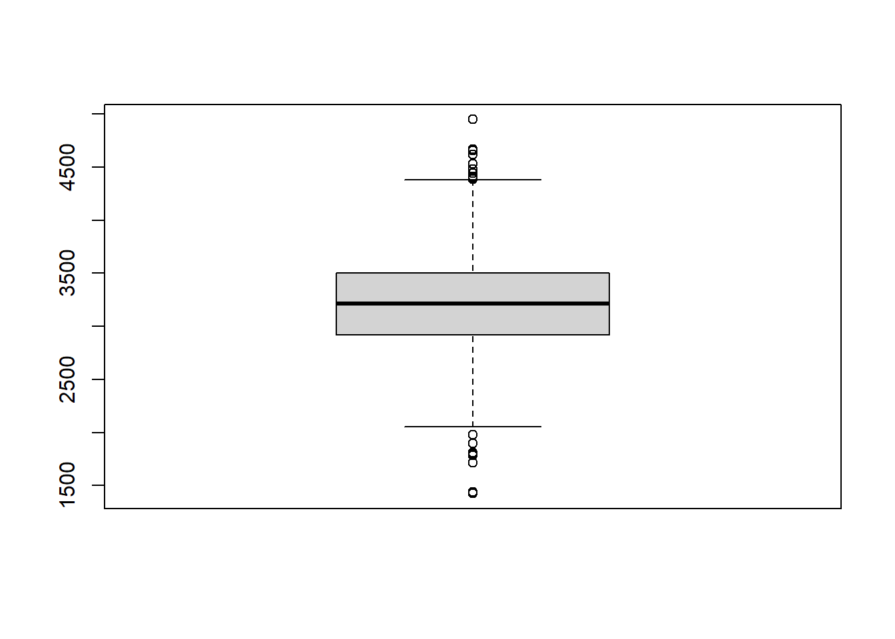
Este boxplot pode ser modificado, alterando alguns argumentos como colocação de um título no gráfico, eótulos nos eixos e mudança na cor. Os argumento cex.lab, cex.axis e cex.names estabelecem o tamanho fontes. Por exemplo, está igual a 1 e para aumentar em 20%, usamos 1.2.
boxplot (dados$pesoRN,
col = "lightblue2",
main = "RN a termo",
ylab = "Peso do Recém-nascido (g)",
border = "black",
cex.lab = 1,
cex.axis = 1,
cex.names = 1)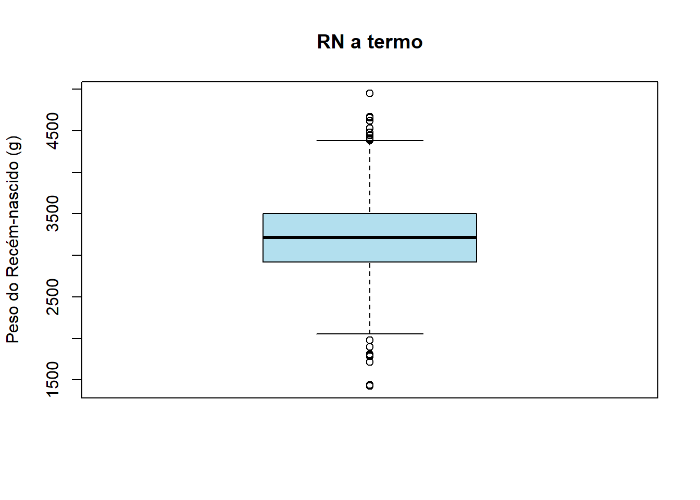
10.11.2 Estatísticas do boxplot
A função boxplot.stats () do pacote grDevices fornece as estatísticas do boxplot, facilitando a interpretação do mesmo, de modo semelhante ao visto para o histograma.
boxplot.stats (dados$pesoRN)## $stats
## [1] 2051 2920 3215 3505 4380
##
## $n
## [1] 1085
##
## $conf
## [1] 3186.939 3243.061
##
## $out
## [1] 1440 1980 1795 1810 4400 4950 4535 4670 1425 4410 4660 1715 1895 4485 4390
## [16] 4445 4620 1785- $stats = é o resumo dos 5 números: mínimo, percentil 25, mediana, percentil 75 e máximo
- $n = nº de obs;
- $conf = limite inf/sup do entalhe se houver;
- $out = são os outliers
10.11.3 Múltiplos boxplots
Os boxplots são muito usados na comparação de grupos. A necessidade mais comum é ordenar as categorias de acordo com o aumento da mediana, mas isto é opcional. Permite identificar rapidamente qual grupo tem o maior valor e como as categorias são classificadas.
boxplot (dados$pesoRN ~ dados$sexo,
col = c("lightblue2", "pink"),
ylab = "Peso do Recém-nascido (g)",
xlab = "Sexo",
ylim = c(1000, 5000),
border = "black",
cex.lab = 1,
cex.axis = 1,
cex.names = 1)Podemos fazer um entalhe (notch) que podem ser interpretados como um intervalo de comparação em torno dos valores medianos. É calculado pela fórmula :\(mediana \pm 1.57\times IIQ/\sqrt{n}\). No nosso exemplo, observe que o entalhe nos meninos está um pouco acima do das meninas..
boxplot (dados$pesoRN ~ dados$sexo,
col = c("lightblue2", "pink"),
ylab = "Peso do Recém-nascido (g)",
xlab = "Sexo",
ylim = c(1000, 5000),
border = "black",
cex.lab = 1,
cex.axis = 1,
cex.names = 1,
notch = TRUE)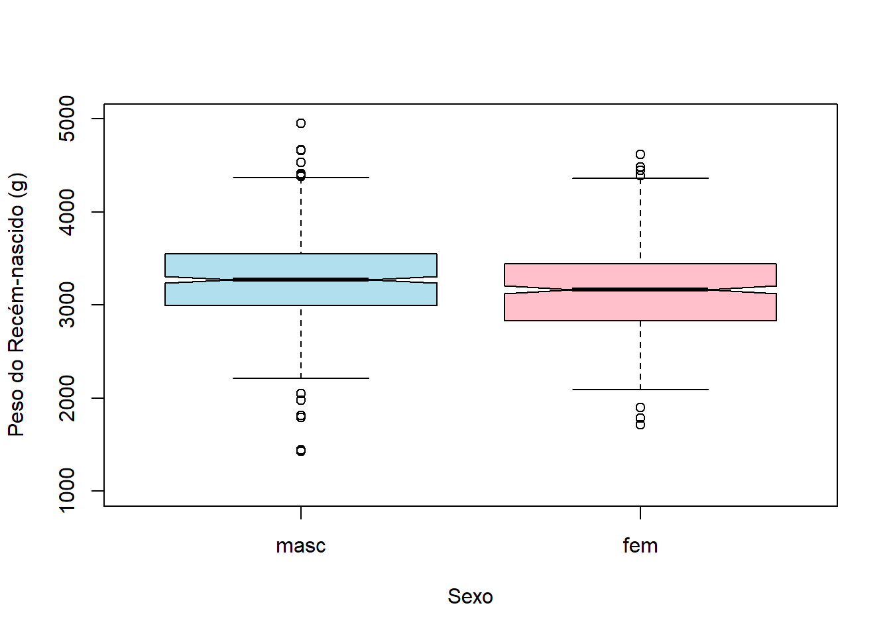
10.11.4 Boxplots com stripcharts
A função stripcharts () permite criar um gráfico de dispersão unidimensional sobre o boxplot. Você também pode personalizar o símbolo (pontos) para criar o gráfico, a largura da linha e sua cor com os argumentos pch, lwd e col, respectivamente. Alguns símbolos, como pch = 21 a 25 permitem que você modifique a cor de fundo do símbolo com o argumento bg. O argumento vertical = TRUE, coloca os pontos na vertical sobreposto ao boxplot, quando o argumento add = TRUE. O argumento cex = 0.3 é o tamanho dos pontos e method = "jitter", espalha os pontos.
boxplot (dados$pesoRN ~ dados$sexo,
col = c("lightblue2", "pink"),
ylab = "Peso do Recém-nascido (g)",
xlab = "Sexo",
border = "black",
cex.lab = 1,
cex.axis = 1,
cex.names = 1,
pch = 20,
cex = 0.8,
outline = TRUE)
stripchart(dados$pesoRN ~ dados$sexo,
method = "jitter",
main=NULL,
col = c("blue", "red"),
vertical=TRUE,
pch=16,
cex = 0.3,
add = TRUE)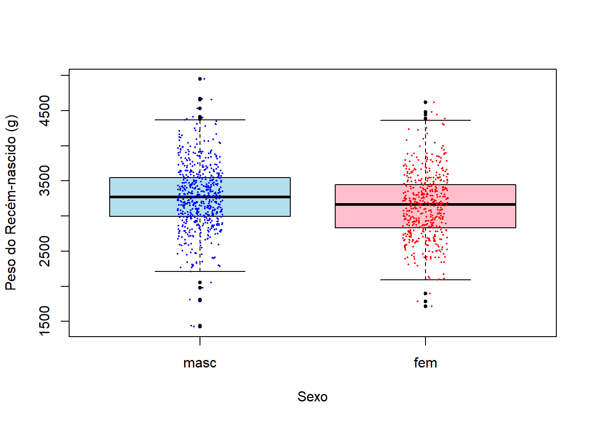
10.11.5 Boxplots horizontais
Para criar um boxplot horizontal, usamos o argumento horizontal = TRUE e invertemos os rotulos dos eixos x e y.
boxplot (dados$pesoRN ~ dados$sexo,
col = c("lightblue2", "pink2"),
xlab = "Peso do Recém-nascido (g)",
ylab = "Sexo",
horizontal = TRUE,
border = "black",
cex.lab = 1,
cex.axis = 1,
cex.names = 1,
pch = 20,
cex = 0.8)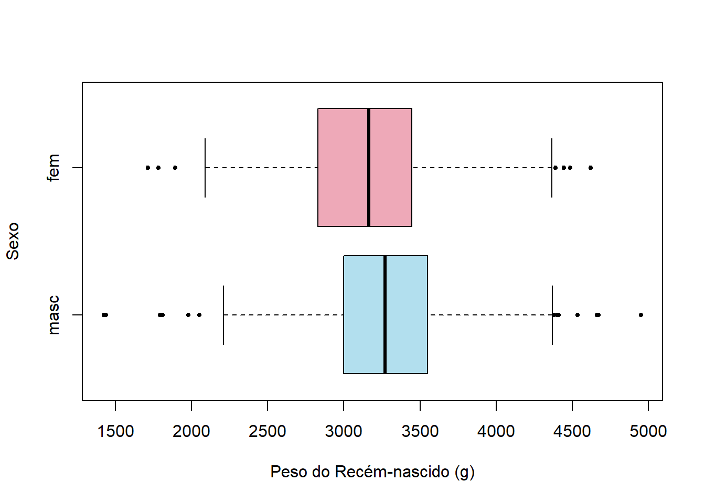
10.11.6 Boxplot com o ggplot2
10.11.6.1 Boxplot único
dados %>%
ggplot(aes(x = "", y = pesoRN)) +
geom_boxplot ()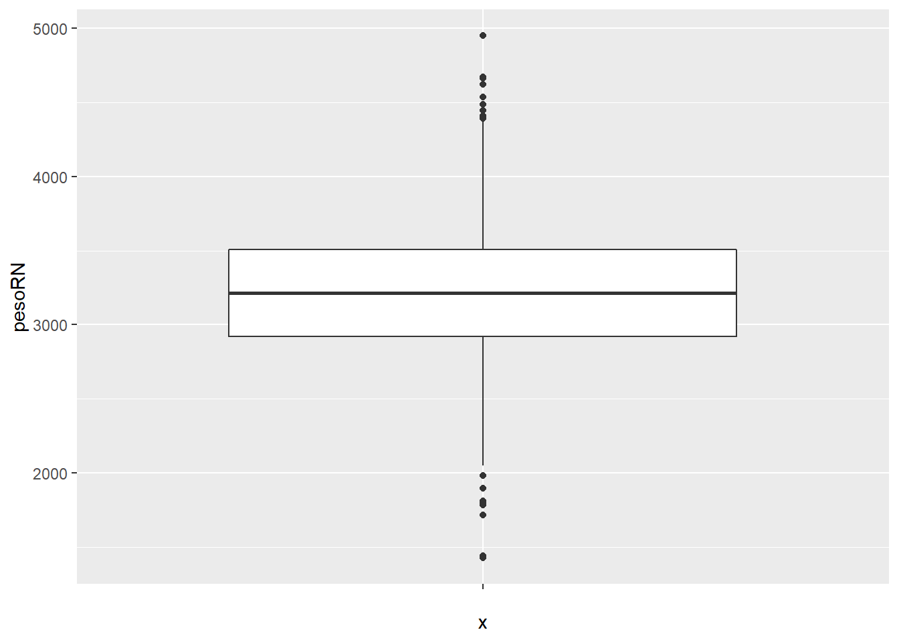
Algumas modificações:
- Adicionar a barra de erro com o
geom_errorbar ()
- No
geom_boxplot()os argumento que determinam a largura da caixa e o formato, o tamanho e a cor dos outliers.
- Acrescentar a camada
labs (), modificandor o nome dos eixosyex.
- Para mudar o aspecto, removendo o fundo cinza do padrão do
ggplot2, altera-se otheme ()para um dos múltiplos possíveis.
dados %>%
ggplot(aes(x = "", y = pesoRN)) +
geom_errorbar(stat = "boxplot", width = 0.2) +
geom_boxplot (width = 0.6,
fill = "grey90",
outlier.color = "red",
outlier.shape = 1,
outlier.size = 2) +
labs(y = "Peso do Recém-nascido (g)",
x = "Todos os RN") +
theme_classic()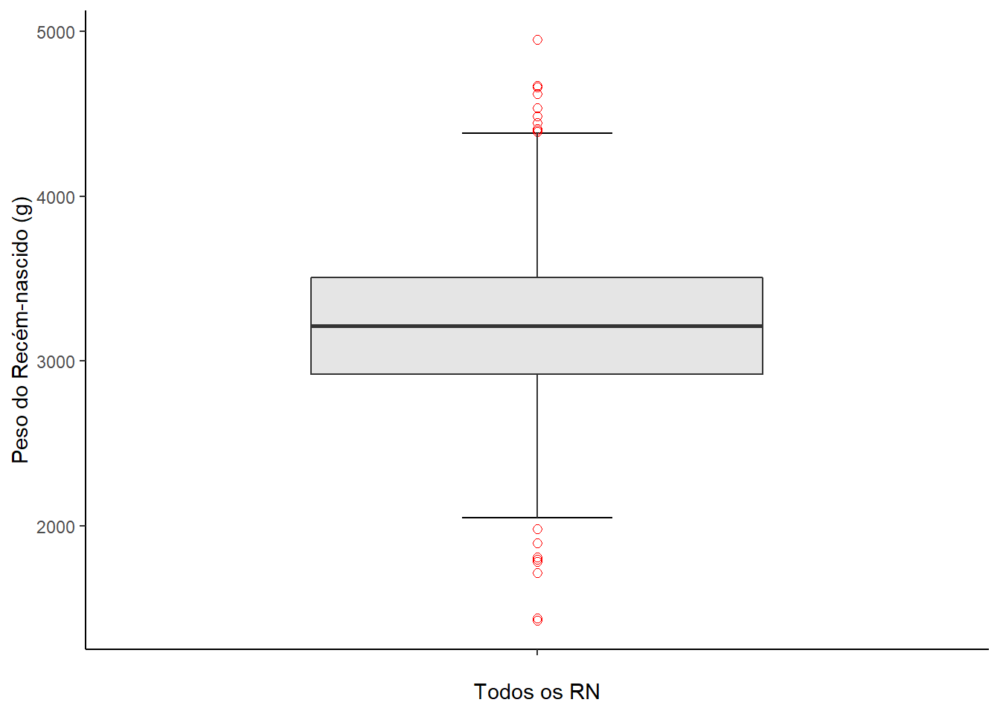
- Para remover os outliers (apesar de não ser recomendado!), basta substituir a cor do argumento
outliers.colorporNA.
dados %>%
ggplot(aes(x = "", y = pesoRN)) +
geom_errorbar(stat = "boxplot", width = 0.2) +
geom_boxplot (width = 0.6,
fill = "grey90",
outlier.color = "NA",
outlier.shape = 1,
outlier.size = 2) +
labs(y = "Peso do Recém-nascido (g)",
x = "Todos os RN") +
theme_classic()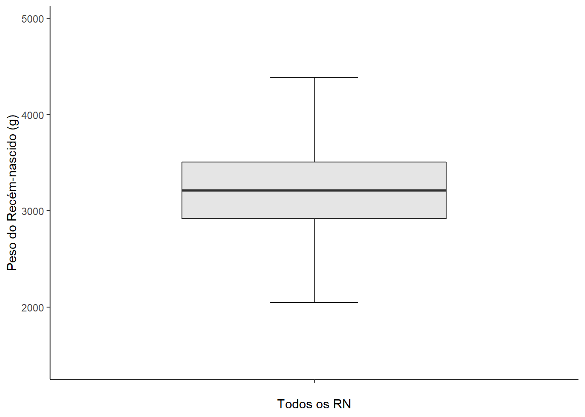
- Podemos inserir a média no gráfico, usando o
geom_point (), após a camafa dogeom_boxplot():
dados %>%
ggplot(aes(x = "", y = pesoRN)) +
geom_errorbar(stat = "boxplot", width = 0.2) +
geom_boxplot (width = 0.6,
fill = "grey90",
outlier.color = "red",
outlier.shape = 1,
outlier.size = 2) +
geom_point(stat = "summary",
fun = "mean",
shape = 19,
size = 3,
color = "red") +
labs(y = "Peso do Recém-nascido (g)",
x = "Todos os RN") +
theme_classic()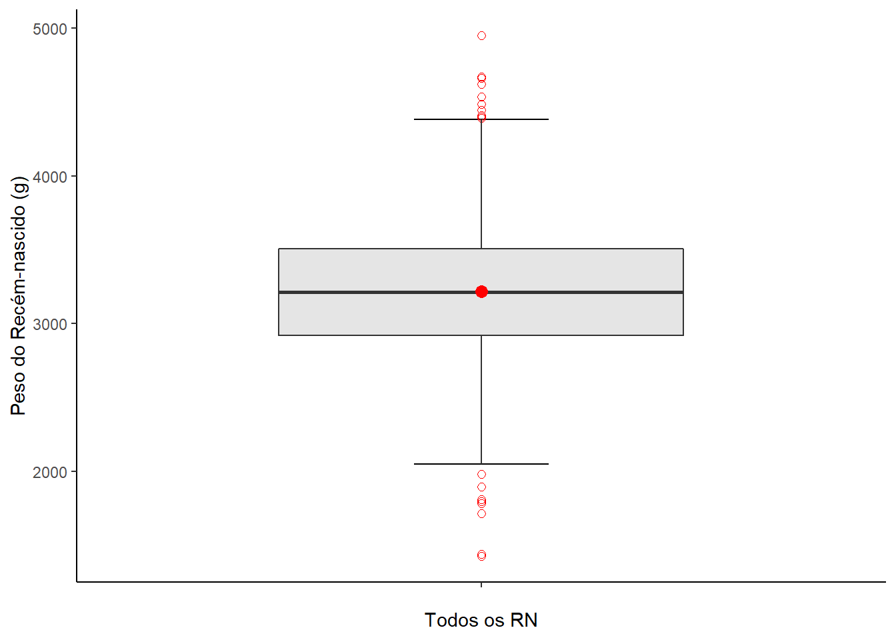
- Uma outra modificação que pode ser feita é alterar o comprimento dos “bigodes”, cujo padrão é 1,5 vezes o intervalo interquartil (IIQ), usando o argumento
coefdogeom_boxplot (). Importante: para coincidir com as barras de erro, devemos também alterar ocoefdogeom_errorbar ()para o mesmo valor.
dados %>%
ggplot(aes(x = "", y = pesoRN)) +
geom_errorbar(stat = "boxplot",
width = 0.2,
coef = 3) +
geom_boxplot (width = 0.6,
fill = "grey90",
outlier.color = "red",
outlier.shape = 1,
outlier.size = 2,
coef = 3) +
geom_point(stat = "summary",
fun = "mean",
shape = 19,
size = 3,
color = "red") +
labs(y = "Peso do Recém-nascido (g)",
x = "Todos os RN") +
theme_classic()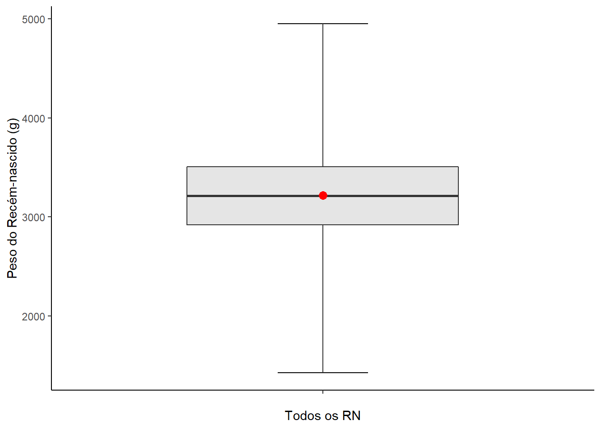
Observe que os outliers desapareceram, significando que não existem outliers extremos.
- Da mesma forma que nos comandos básicos, é possível colocar o boxplot na posição horizontal, usando a camada
coord_flip():
dados %>%
ggplot(aes(x = "", y = pesoRN)) +
geom_errorbar(stat = "boxplot",
width = 0.2,
coef = 1.5) +
geom_boxplot (width = 0.6,
fill = "grey90",
outlier.color = "red",
outlier.shape = 1,
outlier.size = 2,
coef = 1.5) +
geom_point(stat = "summary",
fun = "mean",
shape = 19,
size = 3,
color = "red") +
labs(y = "Peso do Recém-nascido (g)",
x = "Todos os RN") +
coord_flip() +
theme_classic()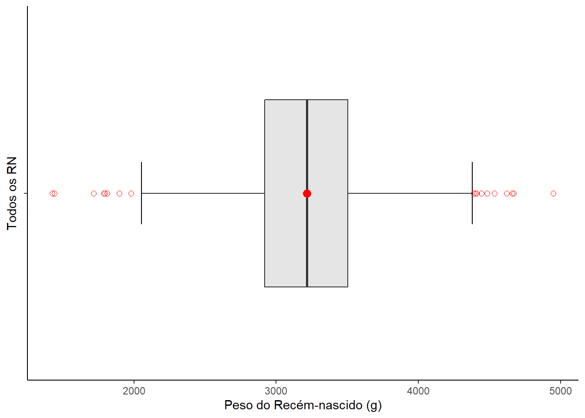
Obs.: O coef voltou para o padrão de 1.5, como idealizado pelo importante estatístico americano John Wilder Tukey (1915 - 2000).
9. Para evitar a sobreposição dos outliers pode-se usar o geom_boxplot_jitter (), do pacote ggrastr, no lugar da camada geom_boxplot ().
pacman::p_load(ggrastr)
dados %>%
ggplot(aes(x = "", y = pesoRN)) +
geom_errorbar(stat = "boxplot",
width = 0.2,
coef = 1.5) +
geom_boxplot_jitter (width = 0.6,
fill = "grey90",
outlier.color = "red",
outlier.shape = 1,
outlier.size = 2,
coef = 1.5,
outlier.jitter.height = 0,
outlier.jitter.width = 0.02) +
geom_point(stat = "summary",
fun = "mean",
shape = 19,
size = 3,
color = "red") +
labs(y = "Peso do Recém-nascido (g)",
x = "Todos os RN") +
theme_classic()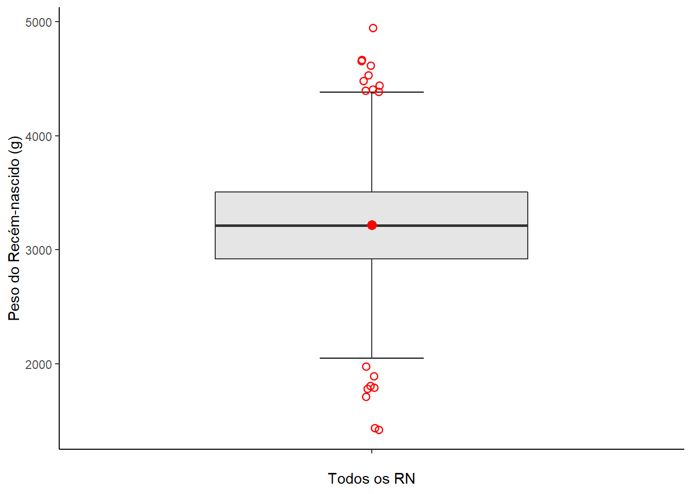
10.11.6.2 Boxplot por grupos
A função geom_boxplot (), usada para criar o boxplot único, permite criar mais de um boxplot, colocando no eixo x a variável separadora, no exemplo, sexo:
dados %>%
ggplot(aes(x = sexo, y = pesoRN)) +
geom_errorbar(stat = "boxplot",
width = 0.2,
coef = 1.5) +
geom_boxplot (width = 0.6,
fill = "grey90",
outlier.color = "red",
outlier.shape = 1,
outlier.size = 2,
coef = 1.5) +
geom_point(stat = "summary",
fun = "mean",
shape = 19,
size = 3,
color = "red") +
labs(y = "Peso do Recém-nascido (g)",
x = "") +
theme_classic()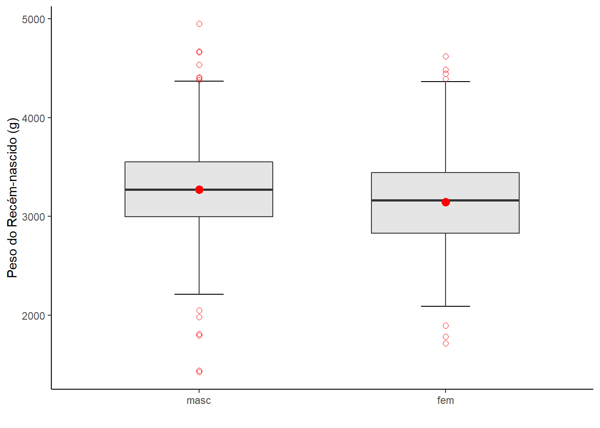
Podemos mudar o rótulos do eixo x sem mudar no banco de dados, substituindo masc por Meninos e fem por Meninas, simplemente modificando os rótulos no argumento labels da função scale_x_discrete () em uma nova camada.
dados %>%
ggplot(aes(x = sexo, y = pesoRN)) +
geom_errorbar(stat = "boxplot",
width = 0.2,
coef = 1.5) +
geom_boxplot (width = 0.6,
fill = "grey90",
outlier.color = "red",
outlier.shape = 1,
outlier.size = 2,
coef = 1.5) +
geom_point(stat = "summary",
fun = "mean",
shape = 19,
size = 3,
color = "red") +
labs(y = "Peso do Recém-nascido (g)",
x = "") +
scale_x_discrete (labels = c("Meninos", "Meninas")) +
theme_classic()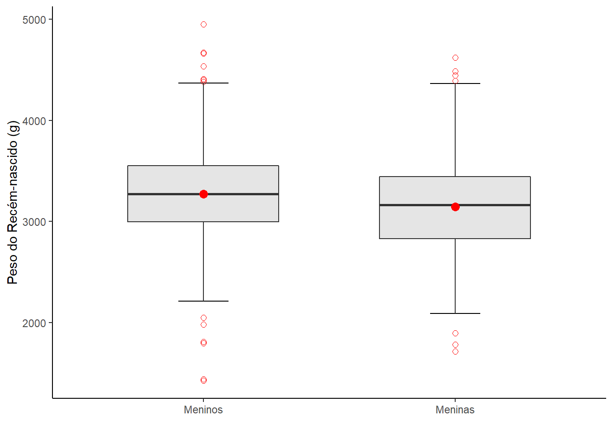
Se quisermos colocar cores diferentes para cada uma das caixas, adicionamos o argumento fill no aes (), removendo o mesmo argumento do geom_boxplot ():
dados %>%
ggplot(aes(x = sexo, y = pesoRN, fill = sexo)) +
geom_errorbar(stat = "boxplot",
width = 0.2,
coef = 1.5) +
geom_boxplot (width = 0.6,
outlier.color = "red",
outlier.shape = 1,
outlier.size = 2,
coef = 1.5) +
geom_point(stat = "summary",
fun = "mean",
shape = 19,
size = 3,
color = "red") +
labs(y = "Peso do Recém-nascido (g)",
x = "") +
scale_x_discrete (labels = c("Meninos", "Meninas")) +
theme_classic()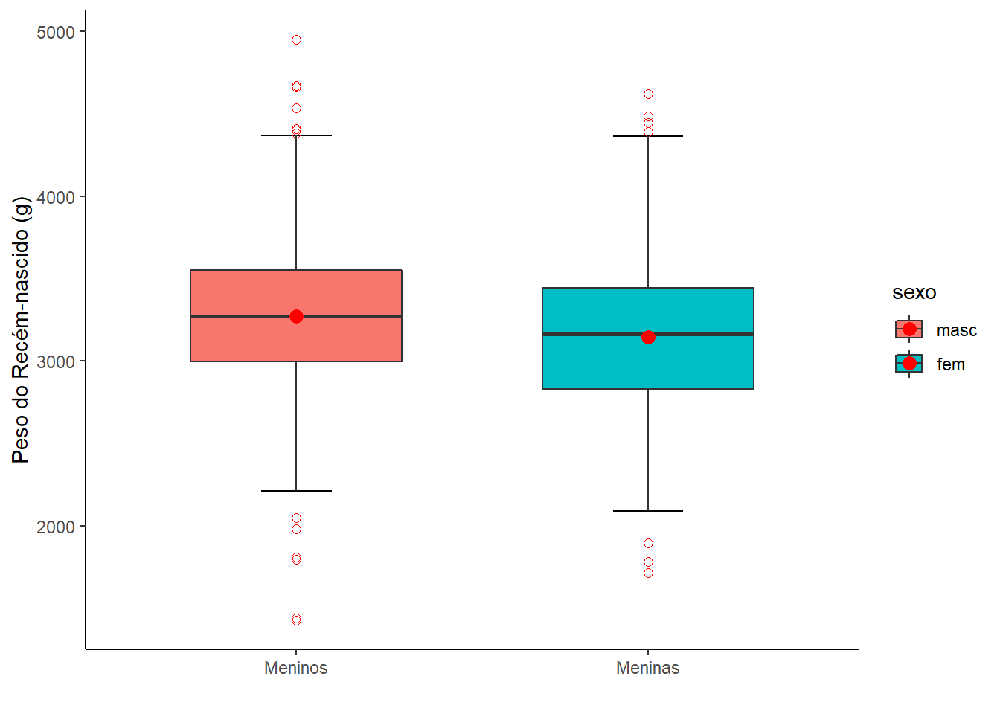
Agora, vamos remover a legenda com a função theme(legend.position = "none", estabelecer as cores para o preenchimento das caixas manualmente com a função scale_fill_manual ():
dados %>%
ggplot(aes(x = sexo, y = pesoRN, fill = sexo)) +
geom_errorbar(stat = "boxplot",
width = 0.2,
coef = 1.5) +
geom_boxplot (width = 0.6,
outlier.color = "red",
outlier.shape = 1,
outlier.size = 2,
coef = 1.5) +
scale_fill_manual(values = c("cyan", "salmon")) +
geom_point(stat = "summary",
fun = "mean",
shape = 19,
size = 3,
color = "red") +
labs(y = "Peso do Recém-nascido (g)",
x = "") +
scale_x_discrete (labels = c("Meninos", "Meninas")) +
theme_classic() +
theme(legend.position="none")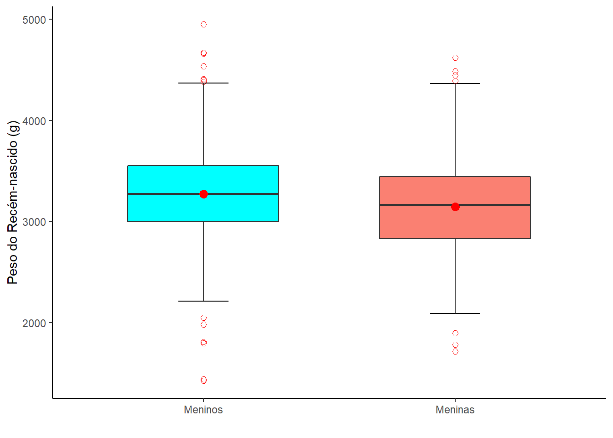
10.12 Gráfico de Dispersão (Scatterplot)
Um gráfico de dispersão (Scatterplot) exibe a relação entre duas variáveis numéricas. Cada ponto representa uma observação. Suas posições nos eixos x (horizontal) e y (vertical) representam os valores das duas variáveis.
O **R* Base é uma boa opção para construir um gráfico de dispersão, usando a função plot (). Ambas as variáveis numéricas do banco de dados devem ser especificadas nos argumentos x e y.
Vamos verificar se existe uma correlação entre o comprimento e o peso dos recém-nascidos:
plot (x = dados$compRN,
y = dados$pesoRN,
ylab = "Peso de Recém-nascido (g)",
xlab = "Comprimento do Recém-nascido (cm)",
las = 1)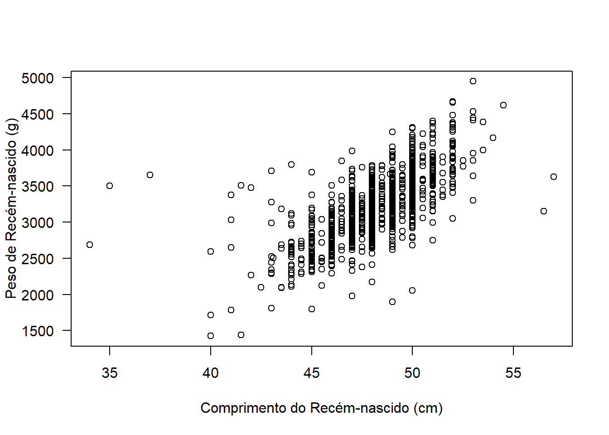
Este mesmo gráfico pode ser obtido, usando uma fórmula y~x:
plot (pesoRN ~ compRN,
data = dados,
ylab = "Peso de Recém-nascido (g)",
xlab = "Comprimento do Recém-nascido (cm)",
las = 1,
bty = "L")Como acontece na maioria dos gráficos básicos, também podemos melhorar o aspecto do scatterplot, tornando os pontos sólidos, cloridos, etc.
plot (pesoRN ~ compRN,
data = dados,
col = "steelblue",
ylab = "Peso de Recém-nascido (g)",
xlab = "Comprimento do Recém-nascido (cm)",
las = 1,
bty = "L",
pch = 19,
cex = 1,
cex.lab = 1,
cex.axis = 0.8)Como os pontos estão aglomerados, devido a quantidade, pode tentar espalhar, usando a função jitter () na variável compRN. O argumento 10 é variável e significa o grau de espalhamento:
plot (jitter(dados$compRN,10),
dados$pesoRN,
col = "steelblue",
ylab = "Peso de Recém-nascido (g)",
xlab = "Comprimento do Recém-nascido (cm)",
las = 1,
bty = "L",
pch = 19,
cex = 1,
cex.lab = 1.2,
cex.axis = 0.8)10.12.1 Mapeamento dos pontos de acordo com uma variável categórica
Inicialmente, vamos criar um vetor para representar as cores, de acordo com o sexo (meninos = azul; meninas = rosa). Usamos a função unclass(dados$sexo) para discriminar os sexos.
cores <- c("steelblue", "pink3")
plot(x = jitter(dados$compRN, 10),
y = dados$pesoRN,
bg = cores[ unclass(dados$sexo) ],
ylab = "Peso de Recém-nascido (g)",
xlab = "Comprimento do Recém-nascido (cm)",
las = 1,
bty = "L",
cex = 2,
pch=21,
cex.lab = 1,
cex.axis = 0.8)
legend (legend=c ("Meninos", "Meninas"),
fill = cores,
bty="n",
cex = 1,
"topleft")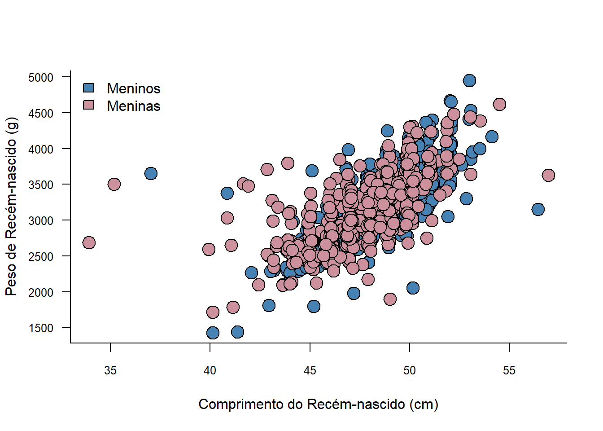
10.12.2 Adição da reta de ajuste
Uma linha reta de ajuste dos dados pode ser acrescentada usando a função abline (), associada a função lm (). Um modelo típico lm (linear model) tem o formato resposta (y) ~ preditor (x). Mais detalhes sobre o modelo de ajuste linear na regressão linear.
# Construção do gráfico de dispersão
plot (jitter(dados$compRN,10),
dados$pesoRN,
col = "steelblue",
ylab = "Peso de Recém-nascido (g)",
xlab = "Comprimento do Recém-nascido (cm)",
las = 1,
bty = "L",
pch = 16,
cex = 1,
cex.lab = 1,
cex.axis = 0.8)
# Criação do modelo de ajuste
modelo <- lm (dados$pesoRN ~ dados$compRN)
# Adição da reta, usando o modelo
abline (modelo,
col="red",
lwd=2,
lty = 2)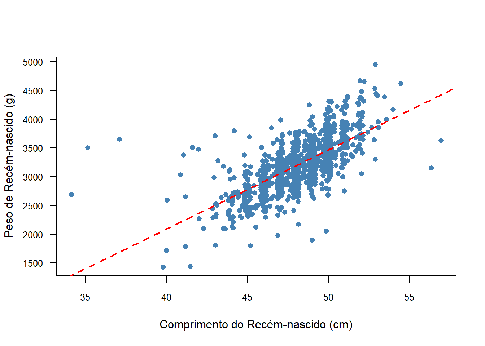
Se executarmos o modelo, obtemos os parâmetros para a construção da equação da regressão linear:
summary(modelo)##
## Call:
## lm(formula = dados$pesoRN ~ dados$compRN)
##
## Residuals:
## Min 1Q Median 3Q Max
## -1434.56 -218.40 -19.56 177.76 2097.87
##
## Coefficients:
## Estimate Std. Error t value Pr(>|t|)
## (Intercept) -3416.451 215.821 -15.83 <2e-16 ***
## dados$compRN 137.674 4.475 30.77 <2e-16 ***
## ---
## Signif. codes: 0 '***' 0.001 '**' 0.01 '*' 0.05 '.' 0.1 ' ' 1
##
## Residual standard error: 337.7 on 1083 degrees of freedom
## Multiple R-squared: 0.4664, Adjusted R-squared: 0.4659
## F-statistic: 946.6 on 1 and 1083 DF, p-value: < 2.2e-16A equação de predição da regressão linear permite que sabendo o valor do comprimento é possível prever o peso do recem-nascido:
\[ \hat{y} = b_{0}+ b_{1}\times x \] Desta forma, substituindo pelos valores contidos nas estimativas da tabela dos coeficientes do sumário do modelo, um bebê com 50 cm terá um peso de aproximadamente:
\[ \hat{y} = -3416.45 + 137.67\times 50 = 3467.05 \]
10.12.3 Gráfico de Dispersão com o ggplot2
Para a construção de um gráfico de dispersão, usando o ggplot2, usamos a função geom_point (). Um gráfico de dispersão simples é obtido como se segue:
dados %>%
ggplot(aes(x = compRN, y = pesoRN)) +
geom_point()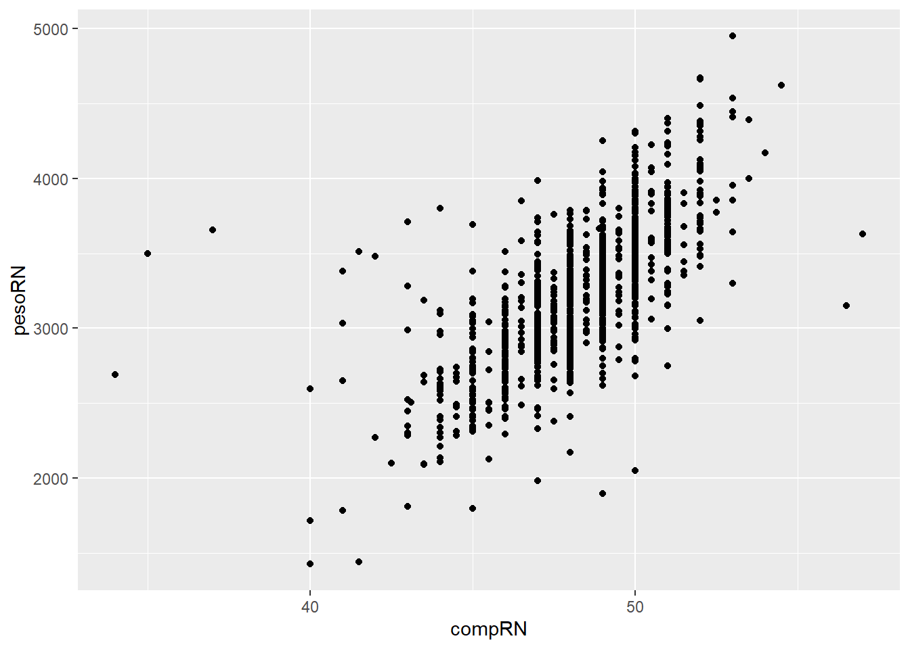
Modifica-se o tamanho e formato do ponto com:
dados %>%
ggplot(aes(x = compRN, y = pesoRN)) +
geom_point(size = 2, shape = 16) +
ylab("Peso do RN (g)") +
xlab("Comprimento do RN (cm)") +
theme_classic()
10.13 Leitura Adicional
Holtz Y. Barplot.The R Graph Gallery. Disponível em: https://www.r-graph-gallery.com/barplot.html. Acesso em 14/08/2022.
Holtz Y. Barplot.The R Graph Gallery. Disponível em: https://www.r-graph-gallery.com/4-barplot-with-error-bar.html. Acesso em 14/08/2022.
H. Wickham. ggplot2: Elegant Graphics for Data Analysis. Springer-Verlag New York, 2016. Disponível em: https://ggplot2.tidyverse.org/reference/geom_bar.html Acesso em 14/08/2022.
H. Wickham. ggplot2: Elegant Graphics for Data Analysis. Springer-Verlag New York, 2016. Disponível em: https://ggplot2.tidyverse.org/reference/geom_boxplot.html Acesso em 17/08/2022.
H. Wickham. ggplot2: Elegant Graphics for Data Analysis. Springer-Verlag New York, 2016. Disponível em: https://ggplot2.tidyverse.org/reference/geom_point.html Acesso em 17/08/2022.
Kassambara A. ggplot2 histogram plot : Quick start guide. STHDA - Statistical tools for high-throughput data analysis. Disponível em: http://www.sthda.com/english/wiki/ggplot2-histogram-plot-quick-start-guide-r-software-and-data-visualization. Acesso em 15/08/2022.
Oliveira Filho PF. Epidemiologia e Bioestatística: fundamentos para a leitura crítica. 2ª ed. Rio de Janeiro: Editora Rubio Ltda; 2022. Gráficos;p.13-24.